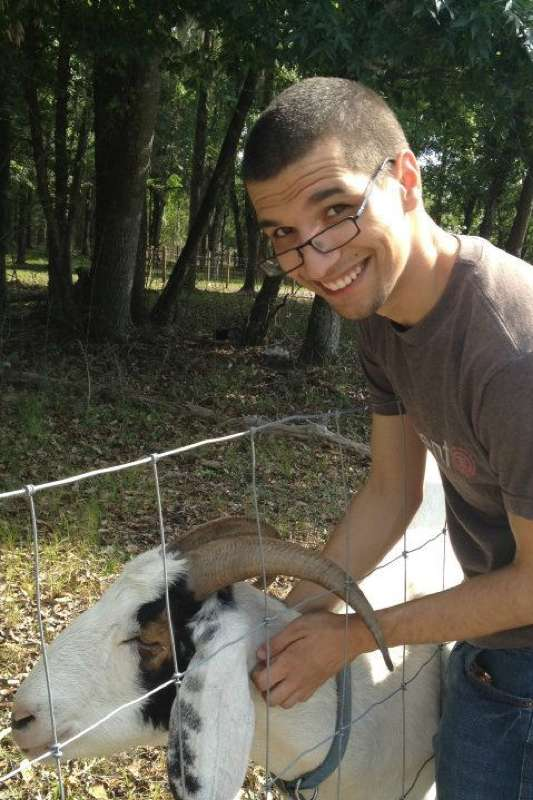

About Me
I am in my junior year as a journalism student at the University of Florida. I am planning a dual major with psychology.

My passion lies in people. Through the power of teamwork amazing things have always been possible, but in the modern world those whom you can team up with has been far expanded. My goal with my education is to equip myself with the tools necessary to be an effective communicator on the world stage.
What will I say when I get there? Only time will tell. I’d like to show people that lucid dreaming is a key step to following your dreams (My wordpress blog). I’d also like to show people how advancing research in the fields of technology and psychology are helping achieve the dreams of humanity as a whole.
By the power of my words I truly hope to make a positive influence on this world.